Repair Procedures
Replacement
[Disc Type]
1. Loosen the wheel nuts slightly.
Raise the vehicle, and make sure it is securely supported.
2. Remove the rear wheel and tire (A) from rear hub.
Tightening torque:
88.2 - 107.8 N.m (9.0 - 11.0 kgf.m, 65.0 - 79.5 lb-ft)
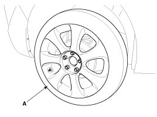
CAUTION:
Be careful not to damage to the hub bolts when removing the rear wheel and tire (A).
3. Remove the brake caliper mounting bolts, and then place the brake caliper assembly (A) with wire.
Tightening torque:
63.7 - 73.5 N.m (6.5 - 7.5 kgf.m, 47.0 - 54.2 lb-ft)
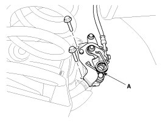
4. Loosen the mounting screws and then brake disc (A).
Tightening torque:
4.9 - 5.8 N.m (0.5 - 0.6 kgf.m, 3.6 - 4.3 lb-ft)
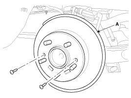
5. Loosen the bolts and then remove the hub bearing (A).
Tightening torque:
49.0 - 58.8 N.m (5.0 - 6.0 kgf.m, 36.1 - 43.3 lb-ft)
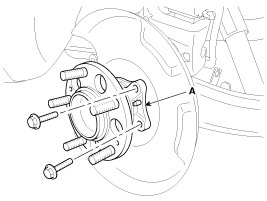
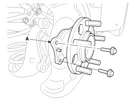
6. Install in the reverse order of removal.
[Drum Type]
1. Remove the rear wheel & tire (A).
Tightening torque:
88.3 - 107.9 N.m (9.0 - 11.0 kgf.m, 65.1 - 79.6 lb-ft)
2. Disconnect the parking brake clip (A).

3. Loosen the bolt and the remove the parking brake cable (A).
Tightening torque:
18.6 - 25.5 N.m (1.9 - 2.6 kgf.m, 13.7 - 18.8 lb-ft)
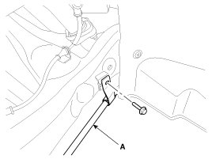
4. Loosen the screw (A) and then remove the disc (B).
Tightening torque:
4.9 - 5.8 N.m (0.5 - 0.6 kgf.m, 3.6 - 4.3 lb-ft)
5. Remove the spring (A, B, C).
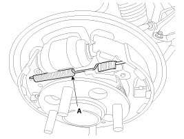
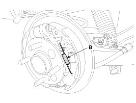
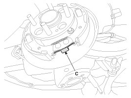
6. Remove the shoe (A).
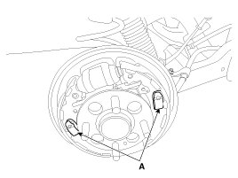
7. Disconnect the parking brake cable (A) from lining (B).
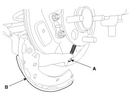
8. Remove the brake hose (A) and then loosen the cylinder bolt.
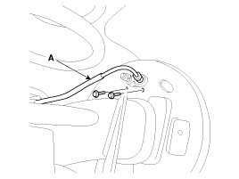
9. Loosen the hub mounting bolt and then remove the hub (A) from the torsion beam.
Tightening torque:
49.0 - 58.8 N.m (5.0 - 6.0 kgf.m, 36.2 - 43.4 lb-ft)
10. Install in the reverse order of removal.
Inspection
1. Check the hub for cracks and the splines for wear.
2. Check the brake disc for scoring and damage.
3. Check the rear axle carrier for cracks
4. Check the bearing for cracks or damage.